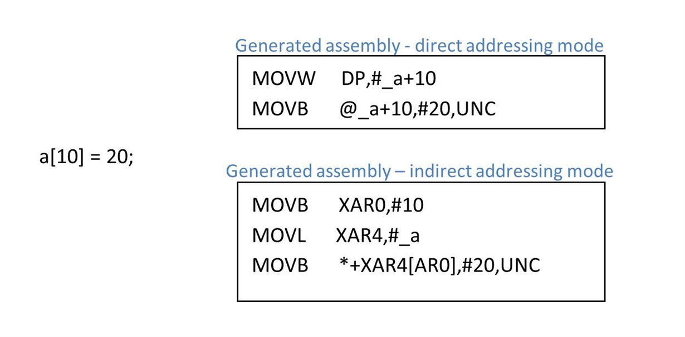
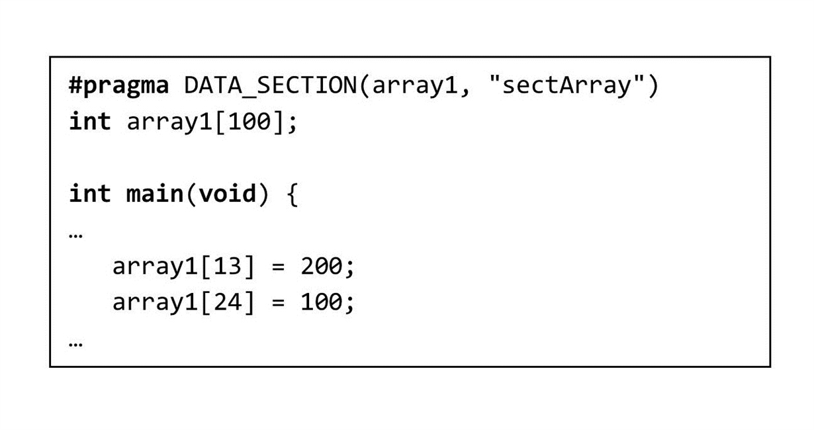
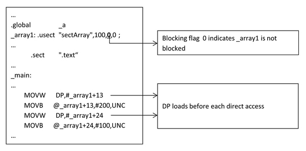
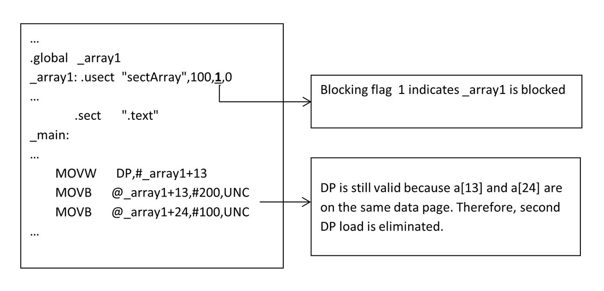
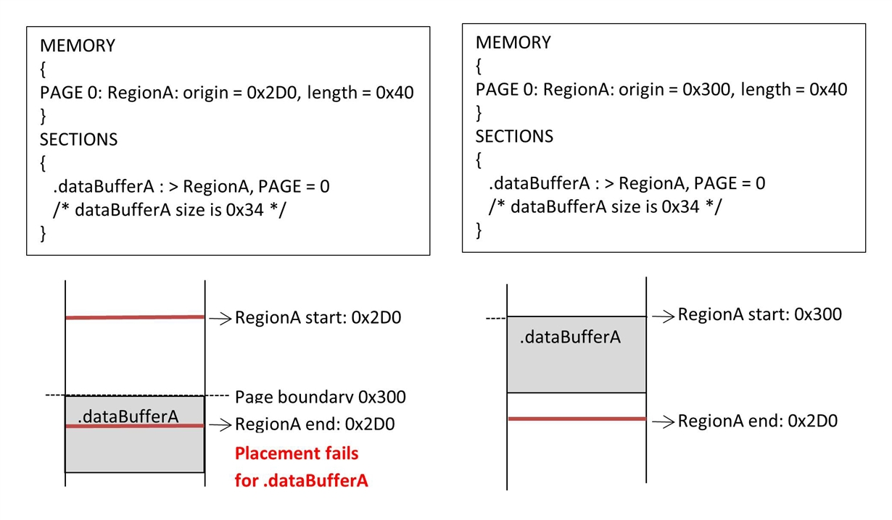

<!-- Start of markdown source -->
At some point, [C2000 microcontroller](https://www.ti.com/c2000) (MCU) compiler users might have encountered scenarios where holes are observed within memory sections, or the linker is unable to place a section even though the available memory is larger than the section. These are likely a result of data blocking, which is a side-effect of data page pointer (DP) load optimization - an optimization automatically performed by the compiler. Before explaining DP-load optimization and data blocking, it will be helpful to examine how the compiler supports direct accesses to scalar-type variables and members of aggregate-type variables.
In direct addressing mode, an instruction is able to directly access data memory within the current 64-word data page stored in the DP register. The compiler generally prefers direct addressing mode over other addressing modes because direct accesses free up the other CPU registers for use by other instructions.
<figure>

<figcaption>**Figure 1: Direct and Indirect addressing modes for accessing a[10]**</figcaption>
</figure>
</br>
</br>
Consider the following sample C source that includes two accesses to the global *"array1"*.
<figure>

<figcaption>**Figure 2: Sample source with constant accesses to array "array1"**</figcaption>
</figure>
</br>
Without DP-load optimization, the compiler will conservatively issue a DP-load instruction before each direct access to (members of) a global variable.
<figure>

<figcaption>**Figure 3: Assembly file generated after compiling Figure 2 with DP-load optimization disabled (using compiler option --disable_dp_load_opt)**</figcaption>
</figure>
</br>
However, additional DP-load instructions are unnecessary when the current DP is still valid. Unnecessary DP-loads negatively impact code size and performance. Consider the (simplistic and probably unlikely) case of consecutive direct accesses to 64 words that are allocated on the same data page. These accesses will cost 63 bytes of redundant DP-load instructions in the .text section and 63 unnecessary cycles executing these redundant load instructions. These costs will increase proportionally with the number of direct accesses.
<figure>

<figcaption>**Figure 4: Assembly file generated after compiling Figure 2 with DP-load optimization enabled (default behavior of the compiler)**</figcaption>
</figure>
</br>
Our compiler mitigates these performance costs by blocking global variables. Blocked variables must either fit entirely within a data page, or be page-aligned (i.e., start on a page boundary). Given this restriction, the compiler knows that direct accesses to the first 64 words of a blocked variable are valid using the same DP. A combination of data blocking and knowledge about relative placement of variables allows the compiler to ascertain whether an existing DP is valid for a new direct access and issue DP loads only when necessary. Reducing the number of DP-loads saves code size and improves performance. However, the compiler must adjust placement of variables to satisfy blocking requirements. In particular, the compiler must align variables that span multiple pages to the start of a new page. This restriction on the placement of blocked variables can introduce holes within data sections and deciding the order to allocate a set of variables to minimize holes is a difficult problem. Currently, the C2000 MCU compiler attempts to limit the holes by sorting variables by increasing size. If you examine the map file of a program with global variables, you will observe that smaller variables get allocated before larger ones. Note that the assembler sets the layout of variables within a section.
The linker is unaware of these holes; therefore, it is unable to fill the holes. In addition, the linker must also respect section blocking requirements when placing blocked sections in memory. Sections containing blocked variables must be blocked. That is, the section must either fit entirely within a data page, or be page-aligned. Blocking relevant sections guarantees the validity of assumptions that the compiler made while optimizing DP-loads. That is, the variables contained within blocked sections will not span a page boundary except when the variable is larger than a page. Blocked sections can cause a linker placement failure even when you have sufficient memory.
The default blocking behavior is different between COFF and EABI. In COFF all non-const data is blocked by default. In EABI, the default blocking decisions were changed in order to reduce memory holes while still enabling the compiler to efficiently use DP addressing. The changes in EABI are:
<ul>
<li> Arrays are no longer blocked. Arrays are typically accessed using indirect accesses like, array[i] where i is not known at compile time, which cannot use DP addressing. </li>
<li> Structs with external linkage (extern in C) are still blocked. This allows accesses from other files to assume the struct is blocked and reduce the number of DP loads. </li>
<li> Structs with internal linkage (static in C) are not blocked, but they are placed in blocked sections. Because the structs can't be accessed by name from another file there is no benefit in blocking the struct. However, the compiler can reduce the number of DP loads if the section the struct is placed in is blocked. </li>
<li> Both const and non-const data is blocked. </li>
</ul>
While the default blocking decisions made by the compiler are generally correct, there can be specific situations where customers need more control. For instance,
<ul>
<li> A global array is accessed using constant indexes, similar to a struct. </li>
<li> The memory holes created by blocking are using too much memory. </li>
<li> Variables that are shared between the C2000 and CLA cores. </li>
</ul>
Starting with 18.9.0.STS, the compiler provides the blocked and noblocked attributes for these situations. The blocked attribute causes the variable to be blocked and the noblocked attribute causes the variable to not be blocked. The attribute must be applied consistently to all declarations and the definition of a variable. There is no checking to ensure the attributes are applied correctly. A best practice is to use the attributes in the header file where the variable is declared:
<pre><code>
__attribute__((blocked))
extern int buffer[10];
__attribute__((noblocked))
extern mystruct s;
</code></pre>
Linker placement failures that occur when placing blocked sections may be resolved by examining the placement of memory regions and sections in the application's linker command file. Recall that a blocked section must either fit within a page or be page aligned. Therefore, placement errors might occur when the start address and size of memory regions do not take into account holes that might be introduced by blocked sections. In such cases, try adjusting the start address of the relevant memory regions to account for blocked sections.
<figure>

<figcaption>**Figure 5a: .dataBufferA must be page aligned and will not fit in RegionA
Figure 5b: RegionA is page aligned. .dataBufferA fits in RegionA**</figcaption>
</figure>
</br>
Please post questions about data blocking in the [TI E2E C/C++ Compiler Forum](https://e2e.ti.com/support/development_tools/compiler).
<!-- End of markdown source -->
<div id="footer"></div>